# A tibble: 10 × 1
volume
<dbl>
1 1193.
2 1150.
3 1243.
4 1207.
5 1236.
6 1292.
7 1201.
8 1259.
9 1157.
10 1169.Rows: 5,216
Columns: 1
$ volume <dbl> 1193.283, 1150.383, 1242.702, 1206.808, 1235.955, 1292.399, 120…Data Science for Studying Language and the Mind
2025-09-23
hereSampling distributionData Science Workflow by R4DS
Inspired by a MATLAB course Katie took by Kendrick Kay
Simulated from Ritchie et al 2018:
Sex Differences in the Adult Human Brain: Evidence from 5216 UK Biobank Participants
Suppose we measure a single quantity: brain volume of human adults (in cubic centemeters)
# A tibble: 10 × 1
volume
<dbl>
1 1193.
2 1150.
3 1243.
4 1207.
5 1236.
6 1292.
7 1201.
8 1259.
9 1157.
10 1169.Rows: 5,216
Columns: 1
$ volume <dbl> 1193.283, 1150.383, 1242.702, 1206.808, 1235.955, 1292.399, 120…Each tick mark is one data point: one participant’s brain volume
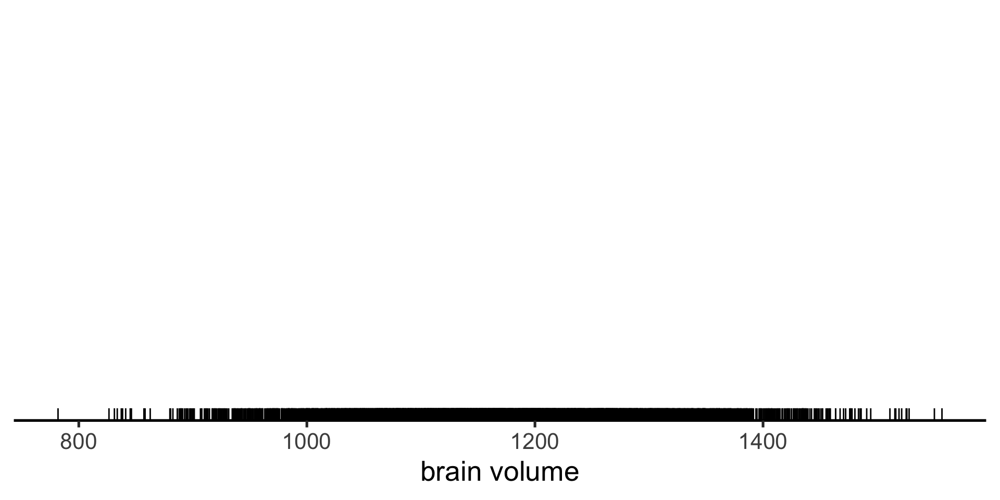Visualize the distribution of the data with a histogram
Summarize the data with a single value: mean, a measure of where a central or typical value might fall
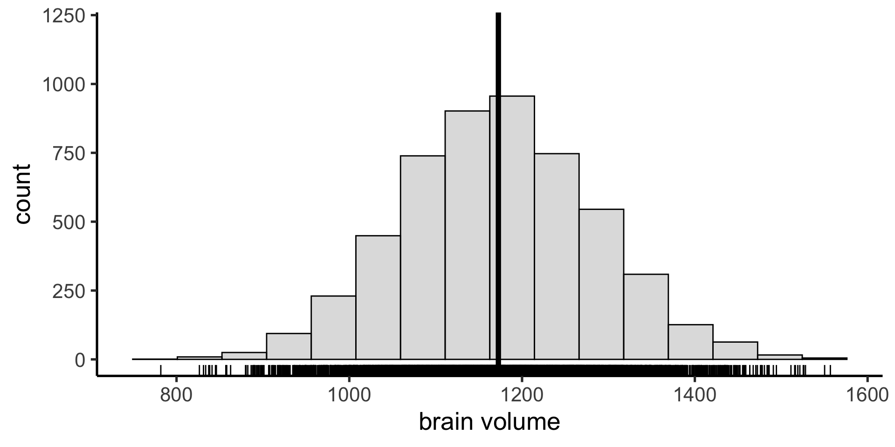
Summarize the data with a single value: mean, a measure of where a central or typical value might fall
Summarize the spread of the data with standard deviation
Summarize the spread of the data with standard deviation
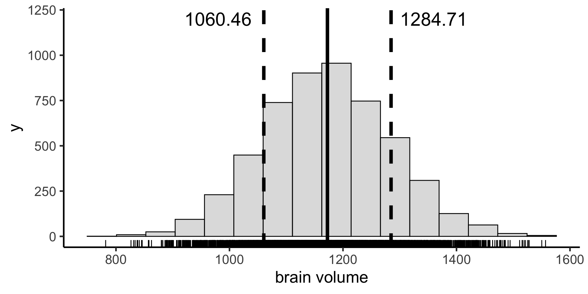
Mean and sd are parametric summary statistics. They are given by the following equations:
\(mean(x) = \bar{x} = \frac{\sum_{i=i}^{n} x_{i}}{n}\)
sd(\(x\)) = \(\sqrt{\frac{\sum_{i=1}^n (x_i - \bar{x})^2}{n-1}}\)
normal (gaussian)Suppose we have a non-normal distribution
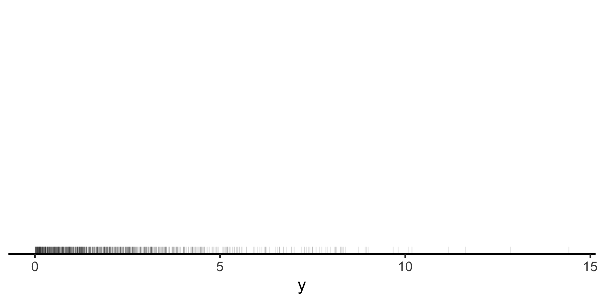
mean() and sd() are not a good summary of central tendency and variability anymore.
Instead we can use the median as our measure of central tendency: the value below which 50% of the data points fall.
And the interquartile range (IQR) as a measure of the spread in our data: the difference between the 25th and 75th percentiles (50% of the data fall between these values)
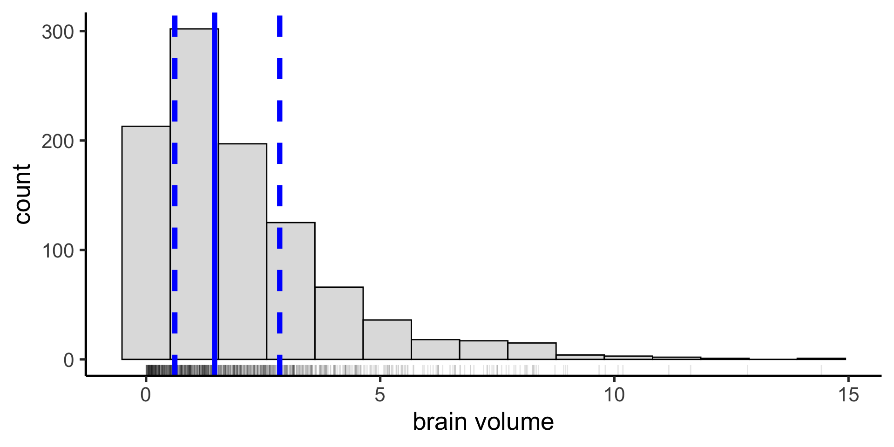
We can calculate any arbitrary coverage interval. In the sciences we often use the 95% coverage interval — the difference between the 2.5 percentile and the 97.5 percentile — including all but 5% of the data.
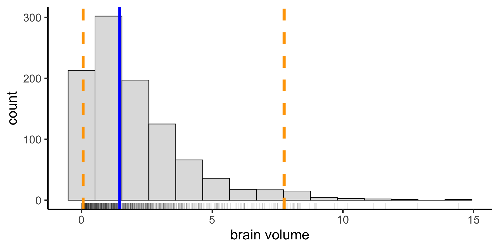
A mathematical function that describes the probability of observing different possible values of a variable (also called probability density function)
All possible values are equally likely
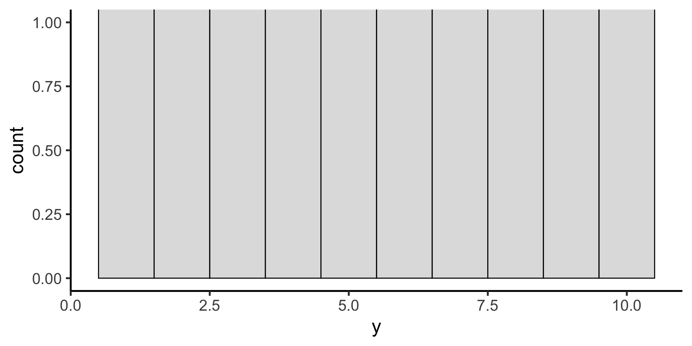The probability density function for the uniform distribution is given by this equation (with two parameters: min and max).
One of the most useful probability distributions for our purposes is the Gaussian (or Normal) distribution
The probability density function for the Gaussian distribution is given by the following equation, with the parameters \(\mu\) (mean) and \(\sigma\) (standard deviation).
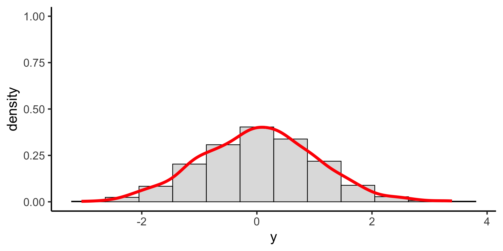When measuring some quantity, we are usually interested in knowning something about the population: the mean brain volume of Penn undergrads (the parameter)
But we only have a small sample of the population: maybe we can measure the brain volume of 100 students
Any statistic we compute from a random sample we’ve collected (parameter estimate) will be subject to sampling variability and will differ from that statistics computed on the entire population (parameter)
If we took another sample of 100 students, our parameter estimate would be different.
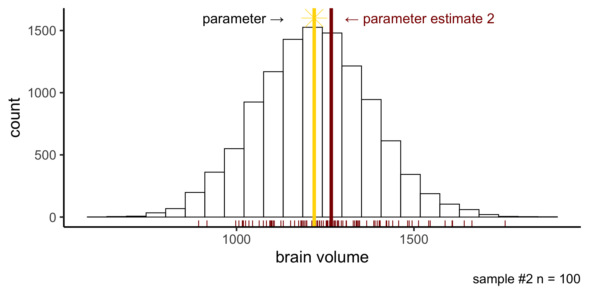The sampling distribution is the probability distribution of values our parameter estimate can take on. Constructed by taking a random sample, computing stat of interest, and repeating many times.
Our first sample was on the low end of possible mean brain volume.
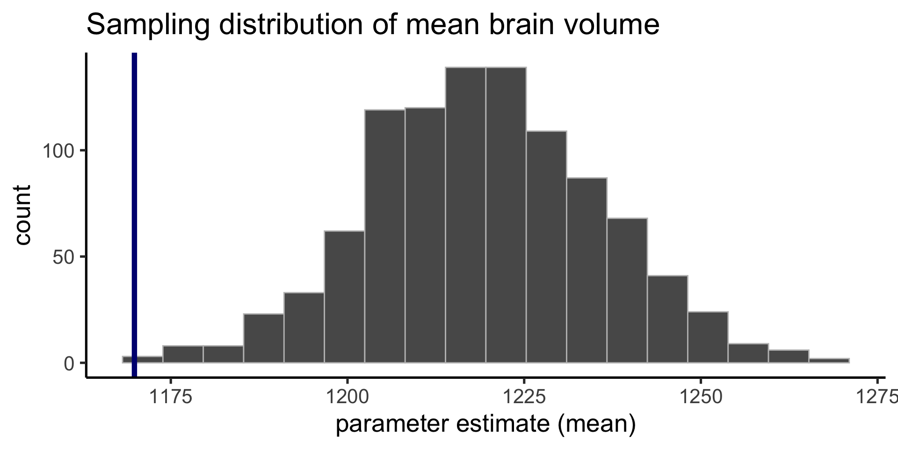Our second sample was on the high end of possible mean brain volume.
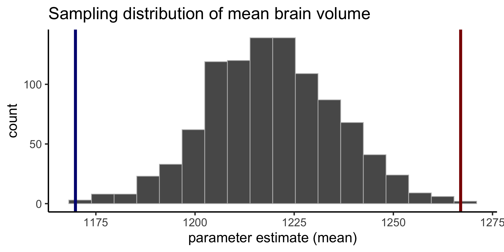The spread of the sampling distribution indicates how the parameter estimate will vary from different random samples.
We can quantify the spread (express our uncertainty on our parameter estimate) in two ways.
standard errorconfidence intervalOne way is to compute the standard deviation of the sampling distribution, which has a special name: the standard error
parametric statistic because we assume a gaussian probaiblity distribution and compute standard error based on what happens theoretically when we sample from that theoretical distribution.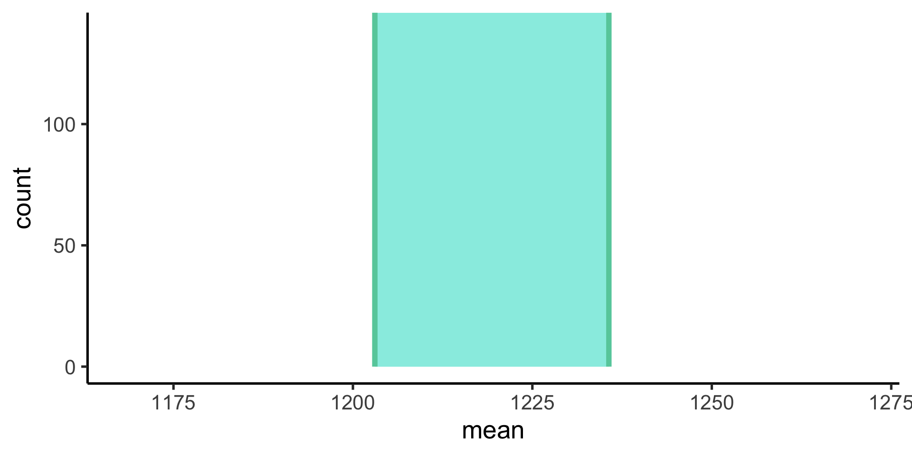
Another way is to construct a confidence interval
one sampleTo construct the sampling distribution
Instead of assuming a parametric probability distributon, we use the data themselves to approximate the underlying distribution: we sample our sample!
inferThe objective of this package is to perform statistical inference using an expressive statistical grammar that coheres with the tidyverse design framework
Suppose we collect a sample of 100 subjects and find their mean brain volume is 1200 cubic cm and sd is 100:
Generate the sampling distribution with specify(), generate(), and calculate()
Response: volume (numeric)
# A tibble: 1,000 × 2
replicate stat
<int> <dbl>
1 1 1213.
2 2 1184.
3 3 1194.
4 4 1184.
5 5 1200.
6 6 1180.
7 7 1197.
8 8 1202.
9 9 1189.
10 10 1193.
# ℹ 990 more rowsVisualize the bootstrap distribution you generated with visualize()
seQuantify the spread of the bootstrapped sampling distributon with get_confidence_interval(), and set the type to se for standard error.
# A tibble: 1 × 2
lower_ci upper_ci
<dbl> <dbl>
1 1179. 1213.ciQuantify the spread of the sampling distributon with get_confidence_interval, and set the type to percentile for confidence interval
# A tibble: 1 × 2
lower_ci upper_ci
<dbl> <dbl>
1 1178. 1212.Tuesday’s lecture was conceptual. Today we will demo those concepts to try to understand them better.
Let’s first try to understand descriptive statistics a bit better by using a toy dataset.
Suppose we create a tibble that measures a single quantity: how many minutes your instructor was late to class for 10 days.
# A tibble: 9 × 1
late_minutes
<dbl>
1 1
2 2
3 2
4 3
5 4
6 2
7 5
8 3
9 3Recall tha twe can summarize (or describe) a set of data with descriptive statistics (aka summary statistics). There are three we typically use:
| Measure | Stats | Describes |
|---|---|---|
| Central tendency | mean, median, mode | a central or typical value |
| Variability | variance, standard deviation, range, IQR | dispersion or spread of values |
| Frequency distribution | count | how frequently different values occur |
We can create a visual summary of our dataset with a histogram, which plots the frequency distribution of the data.
Measure of central tendency describe where a central or typical value might fall
Measures of variability which describe the dispersion or spread of values
We can also get these with group_by() and summarise()
Some statistics are considered parametric because they make assumptions about the distribution of the data (we can compute them theoretically from parameters)
The mean is one example of a parametric descriptive statistic, where \(x_{i}\) is the \(i\)-th data point and \(n\) is the total number of data points
\(mean(x) = \bar{x} = \frac{\sum_{i=i}^{n} x_{i}}{n}\)
Standard deviation is another paramteric descriptive statistic where \(x_{i}\) is the \(i\)-th data point, \(n\) is the total number of data points, and \(\bar{x}\) is the mean.
We can compute this by hand as well, to see how it happens under the hood of sd()
# A tibble: 9 × 3
late_minutes dev sq_dev
<dbl> <dbl> <dbl>
1 1 -1.78 3.16
2 2 -0.778 0.605
3 2 -0.778 0.605
4 3 0.222 0.0494
5 4 1.22 1.49
6 2 -0.778 0.605
7 5 2.22 4.94
8 3 0.222 0.0494
9 3 0.222 0.0494How do we visualize the mean and sd on our histogram?
First get the summary statistics with summarise()
Other statistics are considered nonparametric, because thy make minimal assumptions about the distribution of the data (we can compute them theoretically from parameters)
The mean is the value below which 50% of the data fall.
The difference between the 25th and 75th percentiles. We can compute these values with the quantile() function.
# A tibble: 1 × 2
iqr_lower iqr_upper
<dbl> <dbl>
1 2 3The IQR is also called the 50% coverage interval (because 50% of the data fall in this range). We can calculate any artibrary coverage interval with quantile()
We can visualize these statistics on our histograms in the same way we did mean and sd:
First get the summary statistics with summarise()
A probability distribution is a mathematical function of one (or more) variables that describes the likelihood of observing any specific set of values for the variables.
| function | params | returns |
|---|---|---|
d*() |
depends on * | height of the probability density function at the given values |
p*() |
depends on * | cumulative density function (probability that a random number from the distribution will be less than the given values) |
q*() |
depends on * | value whose cumulative distribution matches the probaiblity (inverse of p) |
r*() |
depends on * | returns n random numbers generated from the distribution |
The uniform distribution is the simplest probability distribution, where all values are equally likely. The probability density function for the uniform distribution is given by this equation (with two parameters: min and max).
\(p(x) = \frac{1}{max-min}\)
We just use norm (normal) to stand in for the *
| function | params | returns |
|---|---|---|
dnorm() |
x, mean, sd | height of the probability density function at the given values |
pnorm() |
q, mean, sd | cumulative density function (probability that a random number from the distribution will be less than the given values) |
qnorm() |
p, mean, sd | value whose cumulative distribution matches the probaiblity (inverse of p) |
rnorm() |
n, mean, sd | returns n random numbers generated from the distribution |
rnorm() to sample from the distributionrnorm(n, mean, sd): returns n random numbers generated from the distribution
dnorm(x, mean, sd)Returns the height of the probability density function at the given values
pnorm(q, mean, sd)Returns the cumulative density function (probability that a random number from the distribution will be less than the given values)
qnorm(p, mean, sd)Returns the value whose cumulative distribution matches the probability
Change the function’s suffix (the * in r*()) to another distribution and pass the parameters that define that distribution.
runif(n, min, max): returns n random numbers generated from the distribution
But remember, this only works for paramteric probability distributions (those defined by particular paramters)
Let’s do a walk through from start to finish
Generate data for the brain volume of the 28201 grad and undergrad students at UPenn and compute the parameter of interest (mean brain volume)
Now take a realistic sample of 100 students and compute the paramter estimate (mean brain volume on our sample)
Use infer to construct the probability distribution of the values our parameter estimate can take on (the sampling distribution).
Response: volume (numeric)
# A tibble: 1,000 × 2
replicate stat
<int> <dbl>
1 1 1203.
2 2 1199.
3 3 1209.
4 4 1200.
5 5 1195.
6 6 1197.
7 7 1200.
8 8 1218.
9 9 1195.
10 10 1196.
# ℹ 990 more rowsRecall that standard error is the standard deviation of the sampling distribution. It indicaes about how far away the true population might be.
# A tibble: 1 × 2
lower_ci upper_ci
<dbl> <dbl>
1 1180. 1220.Confidence intervals are the nonparameteric approach to the standard error: if the distribution is Gaussian, +/- 1 standard error gives the 68% confidence internval and +/- 2 gives the 95% confidence interval.
# A tibble: 1 × 2
lower_ci upper_ci
<dbl> <dbl>
1 1190. 1211.